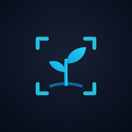
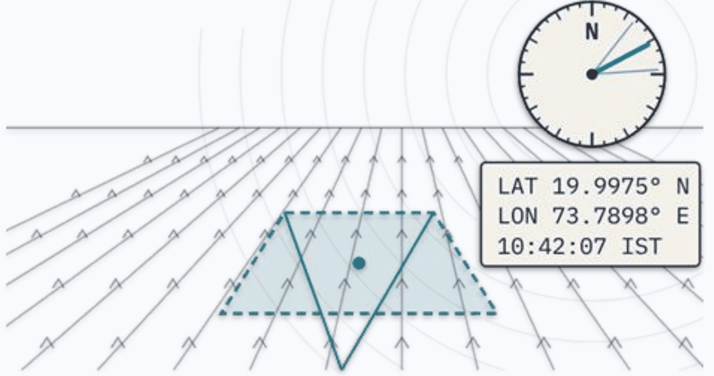
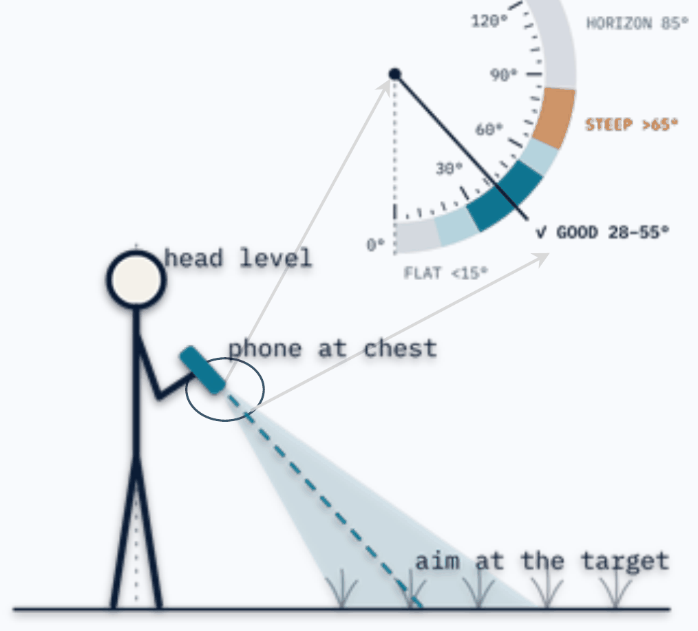
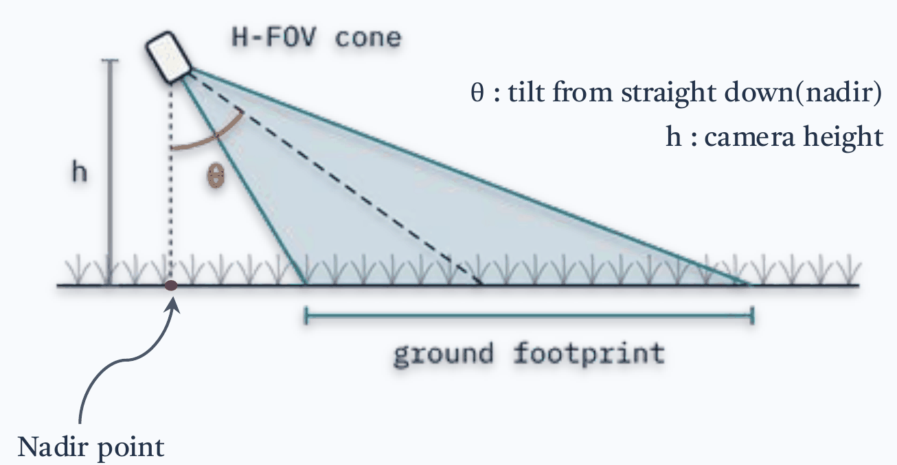

CropView
Let the place speak in coordinates and geometries.
Camera · GPS · Compassv3.6Web + Android
A field capture app that turns every photo into a mapped ground footprint, with its location, look direction and tilt.
In the field
01
Open & allow
Tap “Grant Permissions & Continue” and allow camera, location and compass.
02
Start a session
Name the project. Standing? Keep the camera height at 1.5 m.
03
Wait for GPS
Stand in the open until the GPS button turns blue. Direction off? Tap the compass.
04
Aim
Tilt until the side bar shows ✓ GOOD. Crop surveys: pick the Kc stage in DATA first.
05
Capture
Hold still and tap CAPTURE. Location, look direction and tilt are saved.
06
Map
See your camera POV and ground footprint on the map.
07
Export
Before closing, open DATA, scroll down and tap EXPORT ZIP.
Capture geometry



Every frame carries
lat lon azimuth tilt altitude acc_h fp_w_m fp_d_m heading_source
Filename
ProjectName_ID_YYYYMMDDHHMMSS_lat_lon.jpg
Data Explorer
Map, browse and label your exported ZIPs in the browser. Open the Data Explorer →
01
Load ZIPs
Drop one or more exported ZIPs on the upload box. Each ZIP becomes its own colour-coded set.
02
Read the map
Click a point to see its photo and footprint. Switch layers on or off: footprint, azimuth arrow, FOV cone, capture path.
03
Colour & align
Colour points by project, azimuth, tilt, altitude or index. Arrows look off? Turn them with Rotation Offset.
04
Browse & zoom photos
Open any photo full screen. Pinch, scroll or double-tap to zoom, and drag to look around. On phones, swipe for the next photo.
05
Annotate
On the Annotate tab, select points, type a 2-digit class code and tap Apply to selected. 1st digit: crop or land type. 2nd: growth stage.
06
Export & resume
Export Annotated GeoJSON; it opens in QGIS. Import it later to pick up where you left off.
Photo viewer: ← → move · Space next · + − zoom · 0 fit · I info · Esc close
The field manual is a two-page print, with the field steps in English, हिन्दी, मराठी, தமிழ் and বাংলা.
Made by Somdeep Kundu with ❤️ at RuDRA Lab, C-TARA, IIT Bombay · RGSTC Project · MIT License